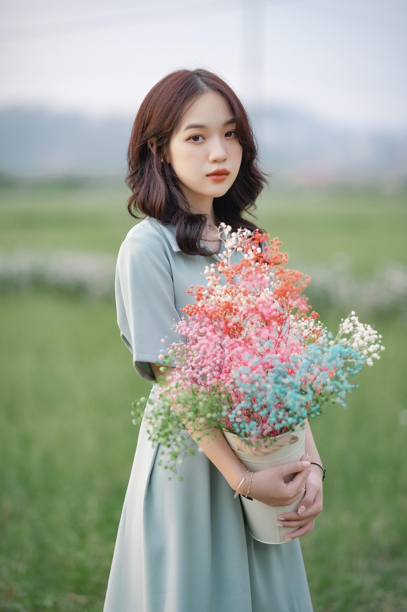

Nilai-Nilai Kami

Kreativitas
Kami selalu berinovasi dalam setiap rangkaian, menciptakan karya yang unik dan berbeda
Tim Kami
Anita Nackos
Tim Pengrajin
Anita memiliki pengalaman lebih dari 10 tahun dalam dunia floral design dan telah mengikuti berbagai workshop internasional.
Jonas Santoso
Tim Kreatif
Budi adalah seniman floral dengan jiwa kreatif yang selalu mencari inspirasi baru untuk setiap rangkaian bunga.
Juki Sadikin
Pemilik Usaha
Juki adalah pengusaha muda yang memulai usahanya sejak 2018. Berawal dari menjual kerajinan bunga sederhana hingga kini sukses di usia muda.